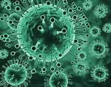

É uma doença infeciosa causada pelo coronavírus da síndrome respiratória aguda grave 2 (SARS-CoV-2). Os sintomas mais comuns são febre, tosse seca e cansaço. Entre outros sintomas menos comuns estão dores musculares, dor de garganta, dor de cabeça, congestão nasal, conjuntivite, perda do olfato e do paladar e erupções cutâneas. Cerca de 80% das infeções pelo SARS-CoV-2 confirmadas têm sintomas ligeiros de COVID-19 ou são assintomáticos, e a maioria recupera sem sequelas. No entanto, 15% das infeções resultam em COVID-19 severa com necessidade de oxigénio e 5% são infeções muito graves que necessitam de ventilação assistida em ambiente hospitalar. Os casos mais graves podem evoluir para pneumonia grave com insuficiência respiratória grave, septicémia, falência de vários órgãos e morte. Entre os sinais de agravamento da doença estão a falta de ar, dor ou pressão no peito, dedos de tom azul ou perturbações na fala e no movimento. O agravamento pode ser súbito, ocorre geralmente durante a segunda semana e requer atenção médica urgente.
A doença transmite-se através de gotículas produzidas nas vias respiratórias das pessoas infetadas. Ao espirrar ou tossir, estas gotículas podem ser inaladas ou atingir diretamente a boca, nariz ou olhos de pessoas em contacto próximo. Estas gotículas podem também depositar-se em objetos e superfícies próximos que podem infetar quem nelas toque e leve a mão aos olhos, nariz ou boca, embora esta forma de transmissão seja menos comum. O intervalo de tempo entre a exposição ao vírus e o início dos sintomas é de 2 a 14 dias, sendo em média 5 dias. Entre os fatores de risco estão a idade avançada e doenças crónicas graves como doenças cardiovasculares, diabetes ou doenças pulmonares. O diagnóstico é suspeito com base nos sintomas e fatores de risco e confirmado com ensaios em tempo real de reação em cadeia de polimerase para deteção de ARN do vírus em amostras de muco ou de sangue. Entre as medidas de prevenção estão a lavagem frequente das mãos, evitar o contacto próximo com outras pessoas, evitar tocar com as mãos na cara e o uso de máscara em locais públicos. À data de 25 de março de 2021, 12 vacinas contra a COVID-19 tinham recebido autorização de uso por pelo menos uma entidade reguladora nacional em todo o mundo. Não existe tratamento antiviral específico para a doença. O tratamento consiste no alívio dos sintomas e cuidados de apoio. As pessoas com casos ligeiros conseguem recuperar em casa. Os antibióticos não têm efeito contra vírus.